Issue #793, how wide the profile draws the plan
Today's plate stretches a town about three times wider than the land it stands on; the plan can keep that or keep the land's own width.
Laukuwelua, the capital (seed 42, index 0)
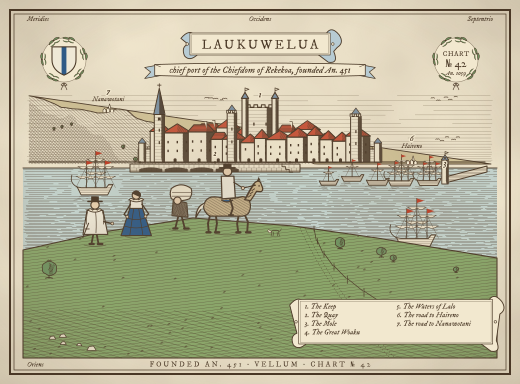
Today's plate, E (the control) From the plan, at today's width
From the plan, at today's width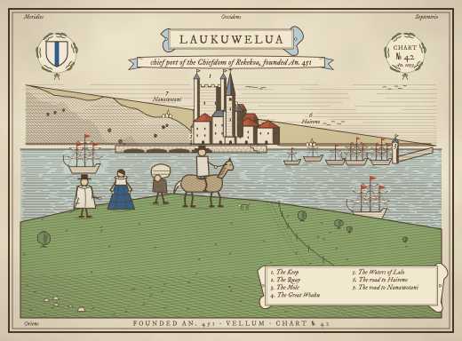
From the plan, at the land's own widthGrurgthohold, the capital (seed 30, index 0)
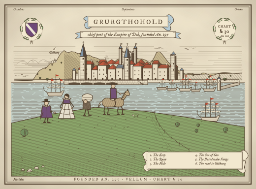
Today's plate, E (the control)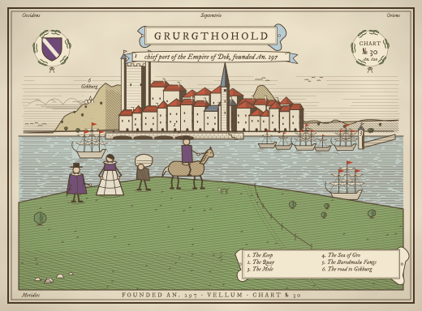
From the plan, at today's width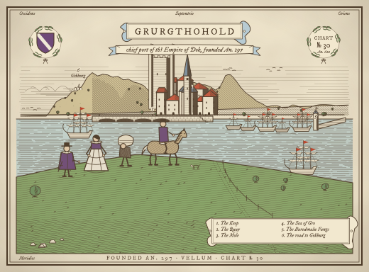
From the plan, at the land's own widthTau, a town (seed 7, index 4)
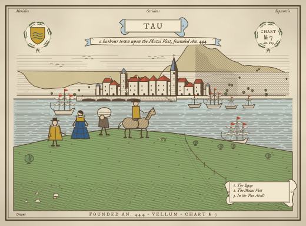
Today's plate, E (the control)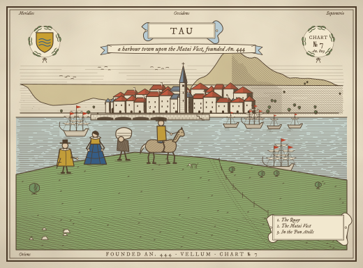
From the plan, at today's width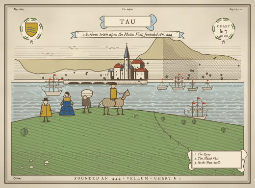
From the plan, at the land's own widthLokai, a village (seed 42, index 10)
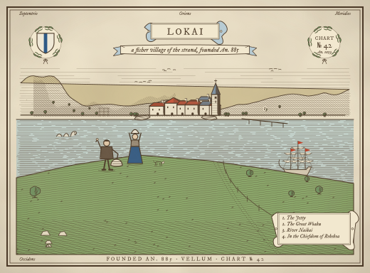
Today's plate, E (the control)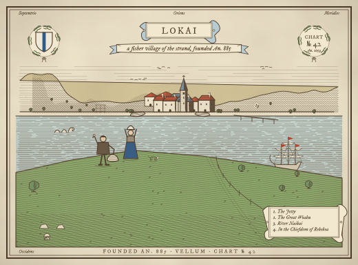
From the plan, at today's width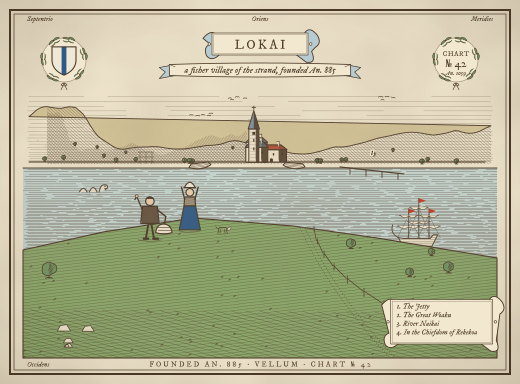
From the plan, at the land's own width